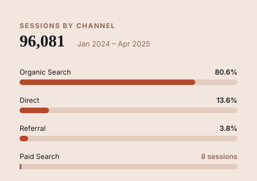

Archova Visuals sells 3D architectural rendering and animation to architects and designers. In the 16 months to January 2024, the site drew 3,395 active users, and 84% of its sessions came from paid search. Organic brought almost none of it.
Over the next 481 days the site drew 73,702 active users. Paid search accounted for eight sessions in the entire window.
GA4, Jan 1 2024 – Apr 23 2025 (481 days), compared against the matched prior period Sep 12 2022 – Jan 3 2024.
The growth came from writing to the questions architects, students, and homeowners already type into Google: architectural styles, building design, interior design, and the adjacent trade topics that bring the same audience in.
The single biggest entry point is an explainer, not a services page. /what-is-architectural-styles pulled 7,086 sessions and 6,486 new users by itself, roughly three times the homepage.
| Channel | Sessions | Share | Engagement rate | |
|---|---|---|---|---|
| Organic Search | 77,434 | 80.59% | 54.45% | |
| Direct | 13,072 | 13.61% | 40.72% | |
| Referral | 3,620 | 3.77% | 48.62% | |
| Organic Social | 795 | 0.83% | 48.68% | |
| Paid Search | 8 | <0.01% | 12.5% |
Organic search also holds the highest engagement rate of any channel, so the volume did not arrive at the cost of quality.
| Page | Sessions | New users | Avg. engagement |
|---|---|---|---|
| /what-is-architectural-styles | 7,086 | 6,486 | 30s |
| / (home) | 2,385 | 1,826 | 26s |
| /what-is-the-future-of-architecture | 2,375 | 1,962 | 37s |
| /which-hvac-systems-are-made-in-the-usa | 1,385 | 1,321 | 32s |
| /how-to-create-a-modern-rustic-interior-design | 1,373 | 1,216 | 33s |
| /how-to-use-geometric-shapes-in-building-design | 1,315 | 1,187 | 28s |
| /what-is-critical-regionalism-in-architecture | 1,313 | 890 | 38s |
The services page still grew on its own: views of "3D Architectural Visualization and Rendering Services" rose 92.5%, and the portfolio page rose 264%.
The audience is global and English-speaking, weighted to the US at 30.9% of active users, then India at 8.6% and the Philippines at 7.1%. It reads on desktop: 64.9% desktop against 33.6% mobile, mostly Chrome on Windows. Spanish, Chinese, and French each cleared a thousand users without a word of localised content.
Reading the report honestly meant flagging four things that undercut the headline.
form_submit events are the closest thing to a lead count that exists.form_submit as a key event, then fix the start/submit mismatch so leads become countable.